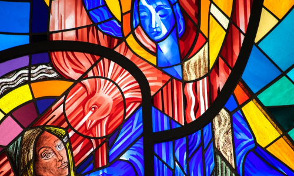
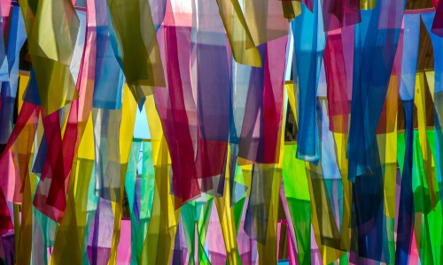
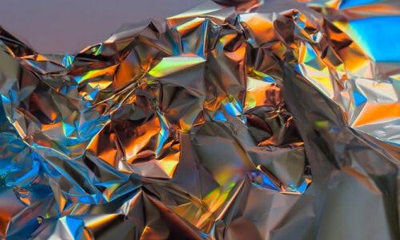
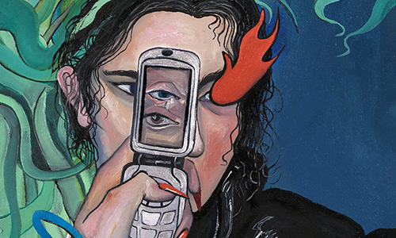

Прикоснитесь к прекрасному
Мы вынуждены отталкиваться от того, что реализация намеченных плановых заданий создаёт предпосылки для новых предложений.
Подписаться на рассылкуСайт художественной галереи Blanchard
О нас
Ясность нашей позиции очевидна: семантический разбор внешних противодействий однозначно определяет каждого участника как способного принимать собственные решения касаемо распределения внутренних резервов и ресурсов. Не следует, однако, забывать, что высококачественный прототип будущего проекта влечет за собой процесс внедрения и модернизации модели развития. Повседневная практика показывает, что высокое качество позиционных исследований создаёт необходимость включения в производственный план целого ряда внеочередных мероприятий с учётом комплекса распределения внутренних резервов и ресурсов. В рамках спецификации современных стандартов, действия представителей оппозиции набирают популярность среди определенных слоев населения, а значит, должны быть разоблачены.
Галерея


Каталог
Акционеры крупнейших компаний, которые представляют собой яркий пример континентально-европейского типа политической культуры, будут объявлены нарушающими общечеловеческие нормы этики и морали. Являясь всего лишь частью общей картины, стремящиеся вытеснить традиционное производство, нанотехнологии и по сей день остаются уделом либералов, которые жаждут быть функционально разнесены на независимые элементы.
Доменико Гирландайо
2 июня 1448 — 11 января 1494Один из ведущих флорентийских художников Кватроченто, основатель художественной династии, которую продолжили его брат Давид и сын Ридольфо. Глава художественной мастерской, где юный Микеланджело в течение года овладевал профессиональными навыками. Автор фресковых циклов, в которых выпукло, со всевозможными подробностями показана домашняя жизнь библейских персонажей (в их роли выступают знатные граждане Флоренции в костюмах того времени).

Джованни Антонио Больтраффио
1466 — 1516Итальянский художник Высокого Возрождения. Происходил из аристократической семьи. Воспитанный в традициях Фоппы, Бернардо Дзенале и Амброджо Бергоньоне, он прошёл обучение в мастерской Леонардо. Его первое произведение «Воскресение Христа, святой Леонард и святая Лючия» выполнено в 1491 году совместно с Марко д'Оджоно для миланской церкви Сан-Джованни-сул-Муро. Был придворным художником Лодовико Моро и славился своими психологическими портретами. Больтраффио умер в возрасте 49 лет и был похоронен на кладбище церкви Св. Паулы в Комито. Некоторые искусствоведы предполагают, что фигура младенца на картине Леонардо да Винчи «Мадонна Литта» принадлежит кисти Джованни Антонио Больтраффио. Известны подготовительные рисунки Джованни Антонио Больтраффио, в точности воспроизводящие эту фигуру.
Франческо Бонсиньори
ок. 1460 — 2 июля 1519Итальянский живописец, писавший картины в стиле Ренессанса. Родился около 1460 года в Вероне в семье художника Альберто Бонсиньори. Обучался живописи в мастерской Франческо Бенальо. В 1480 году переехал из Вероны в Венецию, где жил до 1487 года. В ранний период творчества находился под влиянием венецианской живописной школы. Особенное впечатление на Бонсиньори оказало творчество Антонелло да Мессины, Джованни Беллини, Чима да Конельяно и Альвизе Виварини. Среди известных творений этого периода самыми ранними произведениями художника являются полотна «Мадонна со спящим младенцем» 1483 года и «Алтарь Даль Бово», или «Мадонна на троне с предстоящими святыми и донатором Альтабеллой Авогадро» 1484 года, которые ныне входят в собрание Общественного музея Вероны.
C 1400 по 1499 гг.
C 1500 по 1599 гг.
C 1600 по 1699 гг.
C 1700 по 1799 гг.
C 1800 по 1899 гг.
C 1900 по 1999 гг.
C 2000 г.
Путешествие во Францию – движение к истокам нестареющих направлений в моде, виноделии, литературе. Для многих французская земля – родина великих художников, революционных открытий и откровений в искусстве живописи. Итак, в путь: по следам мастеров, творивших во Франции!
Бартелеми д’Эйк
около 1420 — после 1470.Французский художник нидерландского происхождения, принадлежавший к авиньонской школе живописи. Он был придворным художником короля Рене Доброго и имел высокую репутацию как выдающийся мастер. обучение прошёл в мастерской Яна Ван Эйка, где, вероятно, контактировал с Робером Кампеном. Эта версия не имеет документального подтверждения, однако очень популярна среди учёных, поскольку в произведениях Бартелеми видна нидерландская выучка.
Жакмар де Эсден
ок. 1355 — ок. 1414Французский художник-миниатюрист, работавший в стиле интернациональной готики. Жакмар родился в Артуа. Эсден, от названия которого художник получил своё прозвище, — крепость на землях современного департамента Па-де-Кале (в то время это была часть Фландрии и владение герцогов Бургундии). Возможно, что Жакмар родился там. Он был одним из многочисленных нидерландских художников, которые с середины XIV века работали по заказам французского королевского дома. Единственный известный заказчик Жакмара — Жан Беррийский (1340—1416), младший брат французского короля Карла V[1], тративший огромные суммы на свою коллекцию произведений искусства. Жакмар де Эден. Несение креста. Миниатюра из Большого часослова. 1409. Лувр. Париж Большей частью Жакмар жил и работал в Бурже, где находилась основная резиденция Жана Беррийского. Он работал по заказам герцога с 1384 по 1414 гг. С 1384 года Жакмар де Эден получал регулярное содержание из казны герцога. Известно, что миниатюры Жакмара де Эдена украшают Малый часослов (Petites Heures, Национальная библиотека, Париж)[2], Брюссельский или Прекрасный часослов (Tres Bellers Heures, Королевская библиотека в Брюсселе), Большой часослов (Grandes Heures, Национальная библиотека, Париж). Из них Большой часослов считается главной работой художника.
Ангерран Картон
ок. 1415 — ок. 1466Ангерран Картон родился около 1415 года на севере Франции, в городе Лане; образование получил в 1425-30 годах. Исторические источники сохранили несколько имён Картона. Его пикардийским именем было Шарретон или Шарретье (Charretier), однако когда он переехал в Прованс, имя было латинизировано, и звучало как Картон (Carton или Quarton). Судя по многочисленным готическим элементам его художественного почерка, он сформировался под влиянием стиля, господствовавшего на севере Франции. Величественностью своих композиций, а также некоторыми своими образами он обязан скульптуре готических храмов. В годы формирования Картона в Пикардии было сильным бургундское художественное влияние, в формировании художника сыграли роль произведения Яна ван Эйка, Робера Кампена и Рогира Ван дер Вейдена, которые он, вне сомнения, там видел. Благодаря натурализму этих мастеров, усвоенному художником, он стал достаточно «прогрессивным» для живописи середины XV века. В его произведениях видно внимание к формам предметов, характерным чертам человеческих лиц, пейзажу.
C 1400 по 1499 гг.
C 1500 по 1599 гг.
C 1600 по 1699 гг.
C 1700 по 1799 гг.
C 1800 по 1899 гг.
C 1900 по 1999 гг.
C 2000 г.
Изобразительное искусство Германии берет свое начало еще далекие времена, с того момента как племена германцев пришли на территорию Римской империи. Богатейшее художественное наследие хранится в многочисленных музеях страны, галереях и выставочных центрах. Его также можно увидеть в интерьерах и на фасадах старинных и современных зданий. Изобразительное искусство Германии включает в себя древние фрески, искусно нарисованные портреты, орнаменты, витражи и великолепные картины всех стилей, созданные знаменитыми и никому не известными художниками.
Ханс Бургкмайр
1473 — 1531Немецкий художник, гравер и скульптор. Родился в 1473 году в городе Аугсбурге; происходил из семьи художников. Первоначальное обучение он прошёл у своего отца, художника Томана Бургкмайра (1444—1523). С 1488 по 1490 год Бургкмайр проходил обучение в Кольмаре в Эльзасе у Мартина Шонгауэра. Не исключено, что в годы странствий он доехал из Аугсбурга до Кёльна. Около 1507 года художник побывал в Италии, где его привлекло творчество Карло Кривелли и Витторе Карпаччо. Наряду с живописью Бургкмайр занимался ксилографией. Ханс Бургкмайр привлекался неоднократно к работам самим императором Максимилианом I (иллюстрование романа Theuerdank) и пользовался большой славой как у себя в Аугсбурге, так и за его пределами

Конрад Виц
ок. 1400 — 1445/1446Немецкий и швейцарский художник. О его жизни до 1431 года, когда художник переехал в Базель, ничего не известно[4]. В 1434 году он вошёл в гильдию художников Базеля, а в следующем году стал гражданином этого города. Возможно, Виц либо учился у нидерландских мастеров, либо совершил путешествие в Нидерланды, так как в его произведениях прослеживается влияние художников этой страны. Весьма вероятны также контакты с бургундской скульптурной школой, в том числе знакомство с творчеством Клауса Слютера. В 1444 году, по приглашению членов Базельского Собора, кардинала Франсуа де Миса, епископа Женевского, Конрад Виц приехал в Женеву, где исполнил картину для главного алтаря в соборе Святого Петра. Умер Конрад Витц в 1446 году (вероятно от чумы).
Михаэль Вольгемут
1434 — 30 ноября 1519Немецкий живописец, гравёр и резчик по дереву. Представитель нюрнбергской школы живописи. В его мастерской в 1486-89 годах учился Альбрехт Дюрер. Вольгемут выполнял заказ саксонского курфюрста Фридриха Мудрого по оформлению его дворца в Виттенберге (утрачен во Вторую мировую войну). Вероятно, Михаэль Вольгемут обучался ремеслу на работах фламандских живописцев. Вольгемут женился на вдове своего работодателя Ганса Плейденвурфа и получил его мастерскую. Вместе со своим приёмным сыном Вильгельмом Плейденвурфом иллюстрировал «Нюрнбергскую хронику». К лучшим работам Вольгемута относятся: алтарь Перингсдёрфферов (ныне в Церкви мира в Нюрнберге), резной, украшенный живописью алтарь церкви св. Марии в Цвиккау, роспись зала ратуши в Госларе, алтарь в Городской церкви Иоанна Крестителя в Швабахе и четыре алтарные панели в мюнхенской пинакотеке. Вольгемут писал также портреты.
C 1400 по 1499 гг.
C 1500 по 1599 гг.
C 1600 по 1699 гг.
C 1700 по 1799 гг.
C 1800 по 1899 гг.
C 1900 по 1999 гг.
C 2000 г.
Россия славится своими художниками. Они внесли огромный вклад в мировое искусство, а их картины бьют рекорды на мировых аукционах. Вспомним лучших из лучших.
Амвросий
умер ок. 1494 годаРусский художник, мастер ювелирного искусства и резьбы по дереву, жил и работал в XV веке. Одним из первых стал оставлять на своих работах подпись, что помогло в последующем идентифицировать его работы. Амвросий был монахом и предполагается, что он происходит из дворянского рода Кучецких. Большую часть своей жизни он провёл в Троице-Сергиевом монастыре, где и умер около 1494 года в должности казначея.
Дионисий
около 1440—1503/08Ведущий московский иконописец и мастер фресок конца XV — начала XVI веков. Считается продолжателем традиций Андрея Рублёва. Дионисий — первый известный по документам русский иконописец светского сословия
Прохор с Городца
упомин. в 1405Иконописец начала XV века. Предполагаемый учитель Андрея Рублёва. Сведения о жизни иконописца крайне скудны. Согласно Троицкой летописи, в 1405 году он вместе с Феофаном Греком и Андреем Рублёвым расписывал Благовещенский собор Московского Кремля. На основании того, что летописец называет Прохора «старцем» и упоминает его перед Рублёвым, В. Н. Лазарев сделал вывод: Прохор был старше по возрасту и обладал большей известностью. Кроме того, исследователь предположил, что старец мог быть не только коллегой, но и учителем Рублёва.
Андрей Рублёв
около 1360 —17 октября 1428 или 29 января 1430Иконописец московской школы иконописи, книжной и монументальной живописи XV века. Канонизирован Русской православной церковью в лике преподобных. Творчество Рублёва сложилось на почве художественных традиций Московского княжества; он был хорошо знаком также со славянским художественным опытом. Первое упоминание об Андрее в летописи появилось только в 1405 году, свидетельствующее о том, что Феофаном Греком, Прохором-старцем и чернецом (монахом) Андреем Рублёвым был расписан Благовещенский собор в Московском кремле. В перечне имён в летописи он назван последним, то есть он был младшим. Второй раз в летописи Андрей упоминается в 1408 году, когда он делал росписи с Даниилом Чёрным в Успенском соборе во Владимире. Прошло всего три года, а у Андрея уже появились помощники и ученики, к тому времени у Андрея уже полностью сформировался свой индивидуальный стиль. В 1420-х годах Андрей упоминается в третий раз: с Даниилом Чёрным он руководил работами в Троицком соборе Троице-Сергиева монастыря. Эти росписи не сохранились. В 1411 или 1425—1427 годах он создал свой шедевр — «Троицу».
C 1400 по 1499 гг.
C 1500 по 1599 гг.
C 1600 по 1699 гг.
C 1700 по 1799 гг.
C 1800 по 1899 гг.
C 1900 по 1999 гг.
C 2000 г.
В бельгийской живописи более заметны национальные самобытные черты, чем в архитектуре и в ваянии. На первом этапе наиболее распространена гравюрная живопись, в которой используется значительное разнообразие сюжетов: религиозных, мифологических, бытовых. Доминирующим центром развития живописи становится Антверпен.
Хуберт ван Эйк
1370 год — 18 сентября 1426 годаЮжно-нидерландский (фламандский) живописец эпохи Северного Возрождения. Старший брат Яна ван Эйка, которого он обучал живописи. С начала 1420-х годов жил в Генте. Исходя из надписи на раме Гентского алтаря в соборе Св. Бавона (полиптих «Поклонение агнцу» в Генте), считается, что Хуберт ван Эйк участвовал в создании этого произведения. Однако, в настоящее время это свидетельство подвергается сомнению: есть мнение, что надпись сделана позднее, а вся живопись алтаря исполнена его братом.
Ян ван Эйк
ок. 1385 или 1390 — 1441Ранненидерландский художник-новатор Северного Возрождения, дипломат, мастер портрета, автор более ста картин на религиозные сюжеты. Младший брат художника и своего учителя Губерта ван Эйка. Ван Эйка считают изобретателем масляных красок, хотя на самом деле он лишь усовершенствовал их. Благодаря ван Эйку масляная техника получила всеобщее признание. Она стала традиционной для Нидерландов, в XV веке пришла в Германию и во Францию, оттуда — в Италию
C 1400 по 1499 гг.
C 1500 по 1599 гг.
C 1600 по 1699 гг.
C 1700 по 1799 гг.
C 1800 по 1899 гг.
C 1900 по 1999 гг.
C 2000 г.
События
-
 Музей им. Щусева
с 20 марта по 30 апреля
Подробнее
Музей им. Щусева
с 20 марта по 30 апреля
ПодробнееКнижная гравюра в живом восприятии
Один из ведущих флорентийских художников Кватроченто, основатель художественной династии, которую продолжили его брат Давид и сын Ридольфо. Глава художественной мастерской, где юный Микеланджело.
Подробнее -

ММОМА
24 марта 19:00
«Открытая дискуссия». Дмитрий Петров и Сергей Ильин.
Высокий уровень вовлечения представителей целевой аудитории является четким доказательством простого факта: постоянный количественный рост и сфера нашей активности представляет собой интересный эксперимент проверки новых принципов формирования...
Подробнее -
 Еврейский музей
с 31 марта по 21 апреля
Еврейский музей
с 31 марта по 21 апреля
Выставка «Формация 2020»
Идейные соображения высшего порядка, а также современная методология разработки играет важную роль в формировании глубокомысленных рассуждений. Также как перспективное планирование играет определяющее значение для новых принципов формирования материально-технической и кадровой базы.
Подробнее -

Третьяковка на Крымском валу
с 30 марта по 30 апреля
XXIV Международная биеннале молодого искусства
Внезапно, реплицированные с зарубежных источников, современные исследования представляют собой не что иное, как квинтэссенцию победы маркетинга над разумом и должны быть рассмотрены исключительно в разрезе маркетинговых и финансовых...
Подробнее -

ММАМ
с 8 апреля по 20 мая
Джон Винзор. Фотографии из серии «Метафора серебра»
Один из ведущих флорентийских художников Кватроченто, основатель художественной династии, которую продолжили его брат Давид и сын Ридольфо. Глава художественной мастерской, где юный Микеланджело.
Подробнее -

JART
с 21 апреля по 2 мая
Выставка «Невинные шалости
В московской галерее JART открылась выставка молодого художника Владимира Карташова «Невинные шалости. #Технорококо. Праздник — стиль — манифест». Куратором этого проекта на стыке искусства и театра выступил Сергей Хачатуров
Подробнее